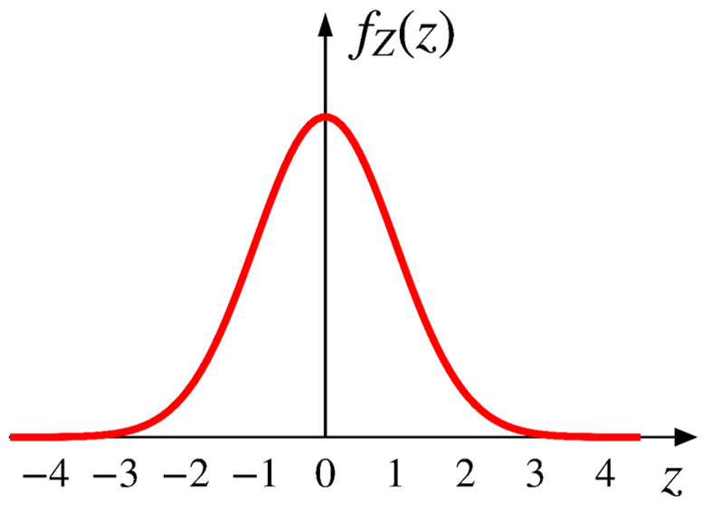

class: split-50 .column[ <br><br><br><br><br> .huge[Normal distribution] ] .column[ <br><br><br>  <div style="margin-top: 0px; text-align: right;"><a class="sourcelink" href="https://github.com/allisonhorst/stats-illustrations">Artwork by @allison_horst</a></div> ] --- # Normal distribution .center[  ] -- Arguably the most important distribution in science. -- Central limit theorem: The sum of many i.i.d. RVs (could be ANY distribution) is approximately normal. --- # .red[Standard normal] distribution A continuous RV $Z$ is standard normal if it has a PDF $$f_Z(z)=\frac{1}{\sqrt{2\pi}}e^{-\frac{z^2}{2}}$$ .center[ $Z \sim \text{N}(0, 1)\;\;\;\;$ <p></p> ] -- The factor $\frac{1}{\sqrt{2\pi}}$ is to ensure the normalization property. --- # .red[Standard normal] distribution $$f_Z(z)=\frac{1}{\sqrt{2\pi}}e^{-\frac{z^2}{2}}$$ <br> Where does the bell shape come from? .center[    ] --- # .red[Normal] distribution A continuous RV $X$ is normal if it has a PDF: $$f_X(x)=\frac{1}{\sigma\sqrt{2\pi}}e^{-\frac{1}{2}(\frac{x-\mu}{\sigma})^2}$$ $$\text{where } \mu \text{ and } \sigma \text{ are its two parameters } (\sigma >0).$$ $$X \sim \text{N}(\mu, \sigma^2)$$ -- .center[ $X \sim \text{N}(2, 1)\;\;\;\;$ <img align="middle" width="280" src="../images/pdf-normal.png"> ] ??? The PDF is symmetric around $\mu$. As $X$ gets further from $\mu$, the PDF decreases rapidly. The PDF is very close to 0 outside $\mu \pm 3\sigma$. --- class: center, middle .huge[[Interactive visualization](https://probstats.org/normal.html)] --- name: normal_expected # Normal distribution $X \sim \text{N}(\mu, \sigma^2)$ $$ \begin{aligned} f_X(x)&=\frac{1}{\sigma\sqrt{2\pi}}e^{-\frac{1}{2}(\frac{x-\mu}{\sigma})^2} \\\ \\\ \text{E}[X]&=\mu; \;\;\;\; \text{var}(X)=\sigma^2 \\\ \end{aligned} $$ .center[] .center[[Proof](#normal_expected_appendix)] --- # Properties Normality is preserved by linear transformations. If $$X \sim \text{N}(\mu, \sigma^2)$$ and $$Y=aX+b, \;\;\;\; \text{for any } a \;(\neq0) \text{ and $b$.}$$ we have $$Y \sim \text{N}(a\mu+b, a^2\sigma^2)$$ --- # PDF & CDF of normal distribution <br> $$X \sim \text{N}(2, 1)$$ .center[   ] --- # CDF of normal distribution $$ \begin{aligned} F_X(x)&=\text{P}(X \leq x) \\\ \\\ &=\int_{-\infty}^x \frac{1}{\sigma\sqrt{2\pi}}e^{-\frac{1}{2}\big(\frac{t-\mu}{\sigma}\big)^2}dt \\\ \\\ &=\frac{1}{\sigma\sqrt{2\pi}}\int_{-\infty}^x e^{-\frac{1}{2}\big(\frac{t-\mu}{\sigma}\big)^2}dt \\\ \end{aligned} $$ Unfortunately, there is no closed-form expression for the integration above. --- # CDF of standard normal distribution .center[] $$ \begin{aligned} F_Z(z)=\Phi(z)&=\text{P}(Z \leq z) \\\ \\\ &=\frac{1}{\sqrt{2\pi}}\int_{-\infty}^z e^{-\frac{t^2}{2}}dt \\\ \end{aligned} $$ --- .center[] --- # Standard normal table (or $Z$ table) - The table only contains values of $\Phi(x)$ for $x \geq 0$. - What if $x < 0$? .center[] -- More generally, we have $$\Phi(-x)=1-\Phi(x), \;\;\;\; \text{for all $x$.} $$ --- # Exercise ❄ The annual snowfall in Dearborn is modeled as a normal distribution with - a mean of $\mu=60$ inches - a standard deviation of $\sigma=20$ inches What is the probability next year has 80+ inches snow? --  --  --- $$X \sim \text{N}(\mu, \sigma^2)$$ What is the probability that $X$ takes values within .red[one] standard deviation from its mean? .center[   ] --- $$X \sim \text{N}(\mu, \sigma^2)$$ What is the probability that $X$ takes values within .red[two] standard deviation from its mean? .center[   ] --- $$X \sim \text{N}(\mu, \sigma^2)$$ What is the probability that $X$ takes values within .red[three] standard deviation from its mean? .center[   ] --- # 68-95-99.7 rule $$X \sim \text{N}(\mu, \sigma^2)$$ .center[] -- [Six Sigma](https://en.wikipedia.org/wiki/Six_Sigma) $$\text{P}(-6\sigma < X < 6 \sigma)=99.99966\%$$ --- # General procedure to get the normal CDF $$X \sim \text{N}(\mu, \sigma^2)$$ -- Step 1. Standardize $X$ to obtain the standard normal $Z$ $$Z=\frac{X-\mu}{\sigma}$$ -- Step 2. Obtain the CDF value from the $Z$ table $$ \begin{aligned} \text{P}(X < x)&=\text{P}(\frac{X-\mu}{\sigma} < \frac{x-\mu}{\sigma}) \\\ &=\text{P}(Z< \frac{x-\mu}{\sigma}) \\\ &=\Phi(\frac{x-\mu}{\sigma}) \\\ \end{aligned} $$ --- # Mixed random variables A RV could be a mixture of both discrete & continuous. Consider the following game of tossing a coin - If it lands on heads, you get $10. - If it lands on tails, you get <span>$</span> amount of $\text{unif}(5, 15)$ --- class: center, middle # Appendices --- name: normal_expected_appendix # Appendix A - Normal dist. (1/3) ([go back](#normal_expected)) First, we show for $Z \sim \text{N}(0, 1)$, we have $\text{E}[Z]=0$. Proof: $$ \begin{aligned} f_Z(z)&=\frac{1}{\sqrt{2\pi}}e^{-\frac{z^2}{2}} \\\ \\\ \text{E}[Z]&=\int_{-\infty}^{+\infty}z(\frac{1}{\sqrt{2\pi}}e^{-\frac{z^2}{2}})dz=0 \\\ \end{aligned} $$ The integration above is 0 as for any odd function $g(x)$ (i.e., $g(-x)=-g(x)$), we have $\int_{-a}^a g(x)dx=0$. --- # Appendix A - Normal dist. (2/3) ([go back](#normal_expected)) Let $$Z=\frac{X-\mu}{\sigma} \;\;\;\;(\text{or } X=\sigma Z+\mu)$$ We have $$f_X(x)=\frac{1}{\sigma\sqrt{2\pi}}e^{-\frac{1}{2}(\frac{x-\mu}{\sigma})^2}$$ $$Z \sim \text{N}(\mu, \sigma^2)$$ $$\text{E}[X]=\text{E}[\sigma Z+\mu]=\sigma\text{E}[Z]+\mu=\sigma\cdot 0+\mu=\mu$$ --- # Appendix A - Normal dist. (3/3) ([go back](#normal_expected)) We can show for $Z \sim \text{N}(0, 1)$, we have $\text{var}(Z)=1$. $$ \begin{aligned} \text{var}(Z)&=\text{E}\big[Z^2\big]-\big(\text{E}[Z]\big)^2 \\\ \\\ &=\int_{-\infty}^{+\infty}z^2(\frac{1}{\sqrt{2\pi}}e^{-\frac{z^2}{2}})dz \\\ \\\ &=1 \;\;\;\;\color{gray}{\rightarrow\text{we will skip the proof of this part.}} \end{aligned} $$ Then we have $$\text{var}(X)=\text{var}(\sigma Z+\mu)=\sigma^2\text{var}(Z)=\sigma^2 \cdot 1 = \sigma^2$$